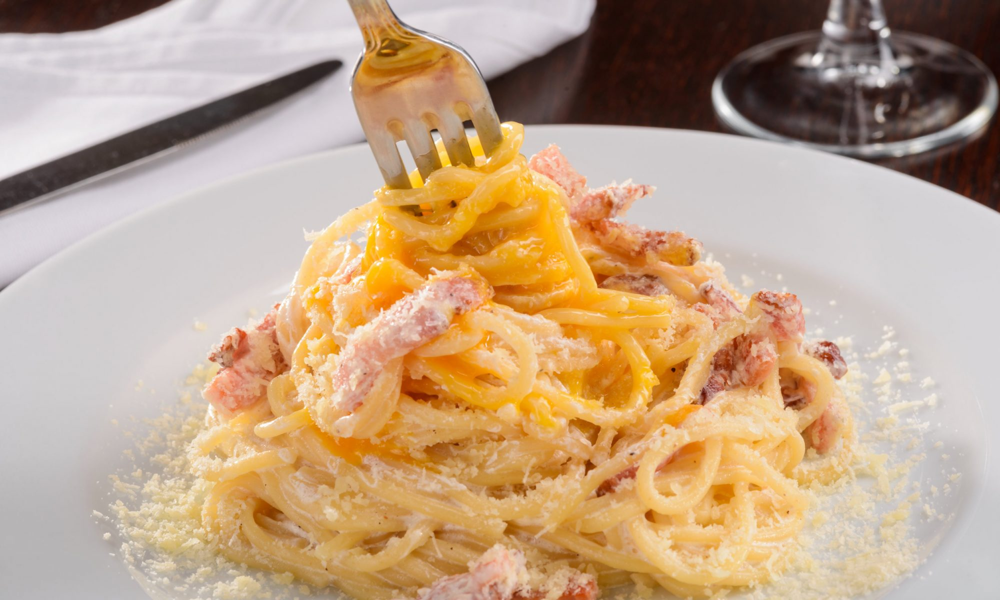
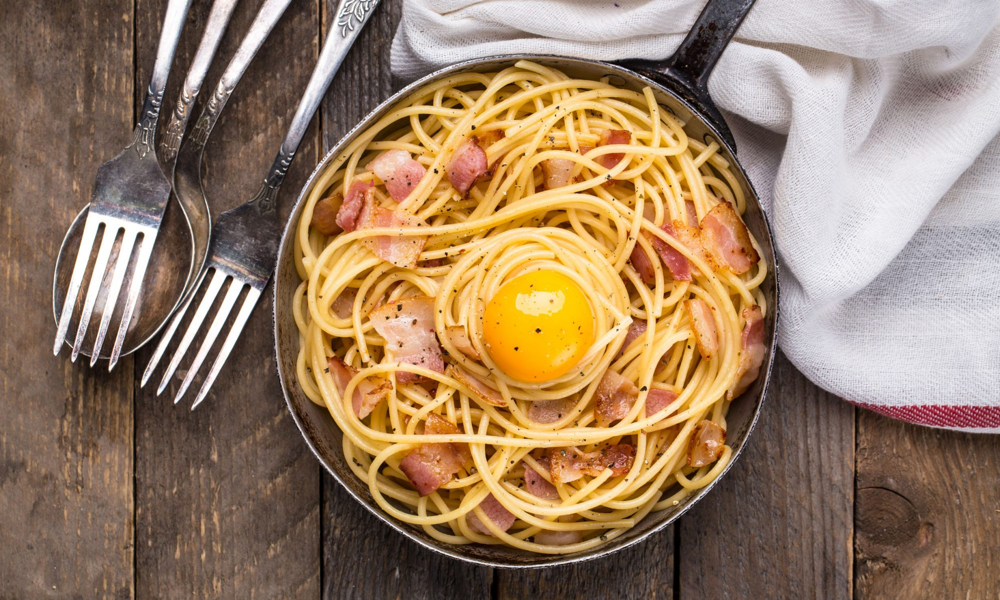
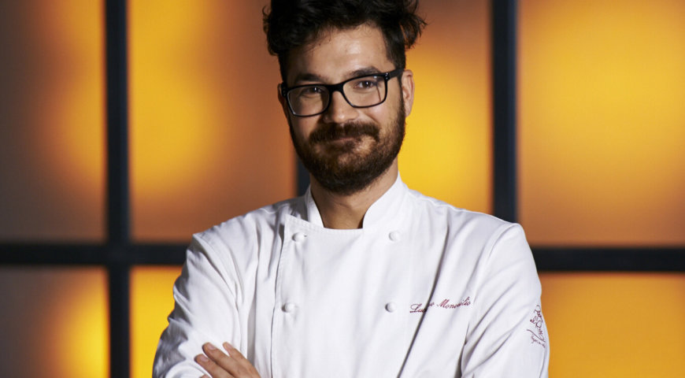
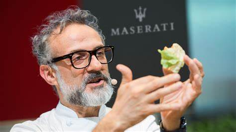
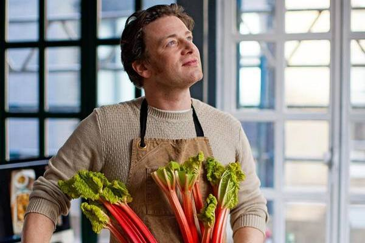

- одно из самых известных и популярных итальянских блюд, которое можно встретить в меню практически каждого ресторана, предлагающего итальянскую кухню. Это блюдо настолько высоко ценится за свою простоту и неповторимый вкус, что многие повара спорят о его происхождении и лучших способах приготовления.

Паста карбонара родом из Лацио, центрального региона Италии, и, несмотря на ряд версий ее происхождения,
она все-таки остается традиционным региональным блюдом. Основными ингредиентами пасты карбонара являются спагетти,
гуанчиале (итальянское сало), яйца, сыр пармезан (пармигиано реджано) или пекорино романо (овечий сыр), перец и соль.
Сегодня паста карбонара приобрела множество вариаций в разных регионах Италии и за ее пределами. В некоторых вариантах используются добавки в виде овощей, мясных продуктов или морепродуктов. Повара постоянно экспериментируют с составом и способами приготовления, чтобы обновлять этот классический рецепт и создавать новые, уникальные вкусовые комбинации. Однако, несмотря на все изменения, дух традиции всегда остается вкусной и привлекательной основой пасты карбонара.
Основные ингредиенты для приготовления традиционной пасты карбонара включают спагетти, гуанчиале (или панчетту),
желток яиц, пармезан или пекорино сыр, свежемолотый черный перец и соль.
Гуанчиале - это вид итальянского свиносала, но также его можно заменить панчеттой - толстой версией итальянского бекона.
Главное отличие карбонары от других видов пасты состоит в использовании только яичных желтков без добавления слизи.

Традиционный способ приготовления пасты карбонара начинается с того, что гуанчиале (или панчетта) обжаривается до золотистого цвета в большом сковороде без добавления масла. Затем спагетти варятся до альденте, после чего в ту же сковороду добавляются отваренные спагетти. Далее смесь яичных желтков и сыра добавляется к спагетти, пока не образуется густая соусовая консистенция. Важно помнить, что пасту карбонара подают сразу после приготовления, чтобы сохранить текстуру и аромат блюда. Перед подачей можно посыпать блюдо свежемолотым черным перцем и добавить щепотку соли по вкусу.
История пасты карбонара уходит своими корнями в итальянскую провинцию Лацио, где оно получило наибольшее распространение. Однако, о происхождении этого блюда существует несколько версий.
Первая версия гласит, что паста карбонара была придумана пастухами, которые отправлялись в долгие походы по зеленым пастбищам с овечьими стадами. В их рюкзаках всегда были с собой яйца, бекон и сыр – самые долго хранящиеся продукты. Именно из этих ингредиентов и было создано блюдо, которое стало известно как паста карбонара.
Вторая версия связана с тем, что в 1944 году американские военные познакомились с местными блюдами во время освобождения Италии. Основными ингредиентами блюда являлись яйца, бекон, сыр и черный перец. Таким образом, паста карбонара стала излюбленным блюдом у американских солдат. Несмотря на разные версии, пасту карбонара можно считать одним из самых старых итальянских блюд. Она славится своей простотой и глубоким вкусом, и именно поэтому она продолжает пользоваться огромной популярностью во всем мире.
История происхождения пасты карбонара обросла различными традиционными и современными легендами. Одни говорят, что блюдо было придумано пастухами в регионе Лацио, которые добавляли яйца и специи в свою пасту, чтобы сделать ее питательнее.
Другая легенда связывает происхождение пасты карбонара с американскими военнослужащими, которые привезли свое любимое блюдо из базы в Карбонаро во время Второй мировой войны.
Существуют также спорные версии, утверждающие, что паста карбонара имеет свои корни в итальянской кухне Рима XVII века, где ее назвали
"маккаронами ала Романьола". Эта версия стала популярной в последние годы, хотя нет исторических доказательств для подтверждения данного утверждения.
Несмотря на различные версии происхождения, паста карбонара остается одним из самых известных итальянских блюд и гордостью региона Лацио.
В течение длительной истории пасты карбонара, рецепт этого блюда подвергся различным изменениям и модификациям. Современные вариации пасты карбонара предлагают новые интересные способы приготовления этого изысканного итальянского блюда. Одна из популярных модификаций рецепта пасты карбонара включает добавление различных ингредиентов для усиления вкуса и аромата. Например, некоторые шеф-повары предлагают добавлять в пасту карбонара свежие овощи, такие как шпинат или зеленый горошек. Это придает блюду более свежий и легкий вкус.
Еще одна популярная вариация пасты карбонара включает использование других видов сыра. Вместо традиционного пармезана можно использовать гауду или грюйер. Это добавляет новые оттенки вкуса и делает блюдо более интересным.
Также, современные вариации пасты карбонара иногда предлагают заменить обычные спагетти на другие виды пасты, такие как пенне или феттуччини. Это делает блюдо более утонченным и оригинальным.
Современные вариации пасты карбонара предлагают бесконечные возможности для эксперимента и самовыражения. Они позволяют насладиться этим прекрасным итальянским блюдом в различных вариациях, подходящих для любого вкуса и предпочтения.
1. Лучано Монти – итальянский шеф-повар, известный своими инновационными рецептами и любовью к традиционной итальянской кухне. Он придумал свой секретный рецепт для пасты карбонара, добавив в нее свежую мяту и плюшки.

2. Гордон Рамзи – британский шеф-повар с мировым именем, известный своим жестким характером и любовью к изысканной кухне. Он разработал собственный рецепт пасты карбонара с добавлением грибов и тимьяна.
3. Массимо Боттура – итальянский шеф-повар, получивший звание лучшего шеф-повара в мире. Он создал свою авторскую версию пасты карбонара, добавив в нее трюфель и плавленый сыр.

4. Джейми Оливер – британский шеф-повар и телеведущий, который прославился своим простым и доступным подходом к готовке. Он придумал свой собственный рецепт пасты карбонара, в котором заменил спагетти на лапшу из куриных яиц.

Каждый из этих шеф-поваров внес свой вклад в развитие и популяризацию пасты карбонара, добавив в нее свои секретные ингредиенты и придумав оригинальные вариации этого знаменитого блюда. В результате, паста карбонара стала любимым блюдом многих гурманов по всему миру.
Паста карбонара появилась в Италии в середине XX века. Считается, что ее название связано с итальянским словом "carbonaro", что означает угольщик. Некоторые источники говорят о том, что это блюдо было популярно среди угольщиков, поэтому и получило такое название.
Традиционно, для приготовления пасты карбонара используются следующие ингредиенты: спагетти, яичный желток, гуанчиале (особый вид итальянского свиносало), тертый пармезан, соль и перец. Но с течением времени рецепт блюда изменился, и теперь многие добавляют в пасту карбонара еще и другие ингредиенты, такие как чеснок, лук или свежие травы.
Паста карбонара - это очень питательное блюдо. Яйца и сыр, используемые при приготовлении, содержат витамины, минералы и белки, которые необходимы для правильного функционирования организма. Однако, из-за высокого содержания жиров и калорий, не рекомендуется употреблять пасту карбонара слишком часто.
Вариации пасты карбонара могут отличаться в разных регионах Италии. Например, в Риме традиционно используется гуанчиале, а в других регионах могут использоваться закопченная свиная боковина или панчетта. Также некоторые рецепты могут добавлять сливки или белое вино для более мягкого вкуса.
Паста карбонара - это быстрое и простое блюдо, которое можно приготовить всего за несколько минут. Также она отлично сочетается с разными типами пасты, такими как феттуччине или пенне.
Теперь, зная эти интересные факты, вы можете еще больше насладиться вкусом и историей пасты карбонара при ее приготовлении или заказе в ресторане.
| Ингредиент | Количество |
| Спагетти | 200 г |
| Гуанчиале (или панчетта) | 100 г |
| Яичные желтки | 2 шт. |
| Пекорино романо | 50 г |
| Черный перец | по вкусу |
| Соль | по вкусу |
Следуя рецепту, вы неприменно сделаете прекрасное блюдо, а также удивите друзей и близких.
Источник: История происхождения пасты карбонара